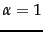

![\includegraphics[totalheight=2.5in]{Rocchio2.eps}](img581.png) An application of Rocchio's algorithm.Some documents have
been labeled as relevant and nonrelevant and the initial query vector
is moved in response to this feedback.
An application of Rocchio's algorithm.Some documents have
been labeled as relevant and nonrelevant and the initial query vector
is moved in response to this feedback.
This was the relevance
feedback mechanism introduced in and popularized
by Salton's SMART system around 1970.
In a real IR query context, we have a user query and partial knowledge of known relevant and nonrelevant documents. The algorithm proposes using the modified query :
Relevance feedback can improve both recall and precision. But, in practice, it has been shown to be most useful for increasing recall in situations where recall is important. This is partly because the technique expands the query, but it is also partly an effect of the use case: when they want high recall, users can be expected to take time to review results and to iterate on the search. Positive feedback also turns out to be much more valuable than negative feedback, and so most IR systems set . Reasonable values might be , , and . In fact, many systems, such as the image search system in Figure 9.1 , allow only positive feedback, which is equivalent to setting . Another alternative is to use only the marked nonrelevant document which received the highest ranking from the IR system as negative feedback (here, in Equation 49). While many of the experimental results comparing various relevance feedback variants are rather inconclusive, some studies have suggested that this variant, called Ide dec-hi is the most effective or at least the most consistent performer.